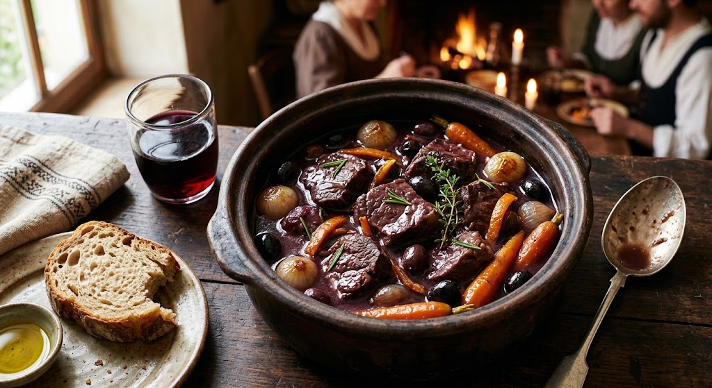

Home
Braised Beef Daube Provençale

Description
A soul-warming medieval French classic, slow-braised to perfection over several hours. Succulent beef chuck is
marinated in rich red wine, garlic, and Mediterranean herbs, then gently simmered with orange zest and black olives.
The citrus accent cuts through the richness, creating a uniquely complex, unforgettable flavor profile fit for a
tavern feast.
Ingredients
- 2.5 lbs beef chuck roast, cut into large 2-inch cubes
- 1 bottle (750ml) full-bodied red wine (like Cabernet Sauvignon or Syrah)
- 4 strips of thick-cut bacon, diced
- 1 large yellow onion, chopped
- 3 carrots, sliced into thick rounds
- 4 cloves garlic, smashed
- 1 strip of fresh orange peel (about 2 inches, pith removed)
- 1/2 cup pitted Niçoise or Kalamata black olives
- 2 tbsp tomato paste
- 2 cups beef broth
- 1 Bouquet Garni (thyme, rosemary, bay leaf tied together)
- 2 tbsp olive oil
- Salt and freshly cracked black pepper to taste
Instructions
- In a large bowl, combine the beef, red wine, garlic, onion, carrots, and orange peel. Cover and marinate in the
refrigerator overnight (or at least 4 hours).
- Drain the beef and vegetables, reserving the wine marinade. Separate the beef cubes and pat them dry with paper
towels.
- In a heavy Dutch oven, cook the diced bacon over medium heat until crispy. Remove bacon with a slotted spoon and
set aside.
- Heat olive oil in the remaining bacon fat. Season beef cubes with salt and pepper, then sear in batches until a
rich brown crust forms on all sides. Set beef aside.
- In the same pot, sauté the drained marinated vegetables for 5 minutes until softened. Stir in the tomato paste
and cook for 1 minute.
- Pour in the reserved wine marinade and beef broth, scraping up all the savory browned bits from the bottom of
the pot.
- Return the beef and bacon to the pot. Add the Bouquet Garni and orange peel, bringing the liquid to a gentle
boil.
- Cover tightly with a lid, reduce heat to the lowest setting, and simmer gently for 2.5 to 3 hours until the beef
is melt-in-your-mouth tender.
- Stir in the black olives during the last 15 minutes of cooking. Season with additional salt and pepper if
needed, remove the Bouquet Garni, and serve hot over buttery mashed potatoes or thick crusty bread.